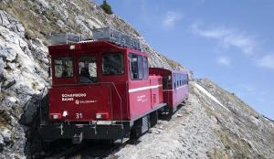
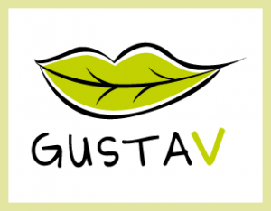
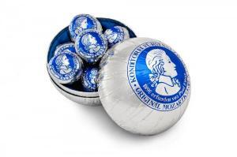
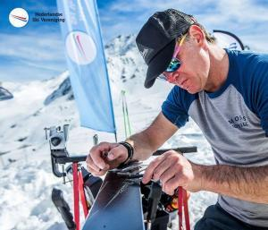
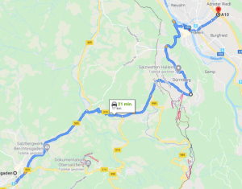
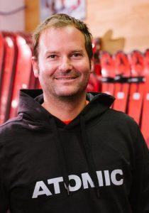
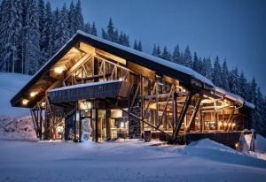
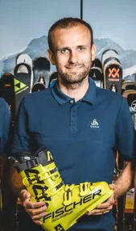
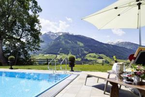

Niet allemaal geheim, wel allemaal de moeite waard.
Zo snel mogelijk naar de piste.
Bijna iedereen die gaat skiën rijdt in een rechte streep naar het geboekte hotel of appartement in de alpen. Logisch misschien want de meesten hebben vijf of zes dagen en daar gaat vaak de skiverhuur-wachttijd nog vanaf.
Als je komt om te skiën dan maak je niet zo snel een uitstapje en dat is jammer want met name Oostenrijk heeft veel moois te bieden. Verreweg de meeste mensen gaan skiën in het Salzburger Land maar in de zomer gaat de vakantie toch eerder richting Wenen, Stiermarken, Karinthië etc. Als het Salzburger Land al wordt aangedaan dan komt men vaak niet verder dan Salzburg en het Mozarthuis. Ik wil je in deze blog meenemen door het Salzburger Land en de schoonheid die het biedt. We gaan naar bekende en minder bekende plekken en we beginnen waar we Oostenrijk binnen komen:
Salzkammergut
We komen bij Bad Reichenhall Oostenrijk binnen en rijden op de A10 voorbij Salzburg (we komen hier zo weer

terug) richting de Wolfgangsee en Sankt Wolfgang im Salzkammergut. Salzkammergut is een prachtig gebied en valt sinds 1997 onder de UNESCO. Aan de overkant van de Wolfgangsee (door oudere Oostenrijkers nog immer Abersee genoemd) ligt Sankt Wolfgang en is het leukste per veerboot bereikbaar. Sankt Wolfgang is leuk maar mijn tip is met de SchafbergBahn de 1783m hoge Schafberg op te gaan. Deze tandradspoorweg bestaat al sinds 1893. Niet alleen prachtige uitzichten maar hier en daar kun je beter geen hoogtevrees hebben… Meer info over Schafbergbahn hier. Meer algemene info hier.Salzburg
Onvermijdelijk is de stad Salzburg. Terug op de A10. Over deze stad is al veel geschreven en veel toeristische

trekpleisters zijn bekend dus die laat ik maar even voor wat ze zijn. Salzburg is een moderne über-hippe stad. Dat zou je bijna vergeten als je voor de traditionele plekjes komt. Maar het barst van de fantastische (vega/vegan) restaurantjes. Een van mijn favorieten is 'The Heart of Joy' (minder zweverig dan 't klinkt.) Mijn tip: de curry van de dag! heartofjoy.atEen andere is Gustav. Een klein tentje: prima om te ontbijten. Zoek maar even verder en je ontdekt een Salzburg ver weg van het massatoerisme.
Hoog tegen de stadsmuur van het slot Salzburg bevindt zich de StadtAlm van Salzburg met een uitzicht over de stad. In een echte 'alm' mag ook de Kaiserschmarrn, Brettl-Jausn en de Kaspressknödel-Supp'n niet ontbreken. Je kunt er ook overnachten. De StadtAlm vind je hier.

Tips van Jack van Nunen bootfitter bij Das Bootfit Zimmer en inwoner van Salzburg

– Restaurant Lemonchilli, leuk urban restaurant met een chill terras.
– Traditioneel maar sensationeel uitzicht: Zistelalm op de Gaisberg.
– Het Almkanal om te liggen en te zwemmen of te surfen.
Kleinkirchentalweg & Dürrnberg-Landes Straße

Op de A10 (Tauernautobahn) richting het zuiden kan je bij Hallein de weg af afslag 16. Toets daar in je navigatie Berchtesgaden in. Snelwegen vermijden en je rijdt via de Kleinkirchentalweg en de Dürrnberg-Landes Straße langs de Obersalzberg naar Berchtesgaden. Deze weg is in de zomer altijd open en leidt je via een sprookjesachtige route langs plekken waar je (ik althans wel) zou willen wonen. Ook de duitse stad Berchtesgaden is de moeite waard hoewel het geen Salzburg is natuurlijk ;-)Pongau
En terug naar Hallein. Op de A10 richting Altenmarkt (im Pongau) kom je langs Eben (im Pongau) daar op de Monte Popolo kan je niet alleen super wandelen maar ook mijmeren in de MoosAlm (per auto bereikbaar).
Verder naar Altenmarkt drink je koffie (met taart) bij Cafe Haidl. Eet je de beste pizza naast de ijshockeybaan en de FlyingMozart lift in Wagrain. Pizzeria Sarastro (heeft geen website). Ik weet niet eens het telefoonnummer maar echte italiaanse pizza in TL licht. Let op: je moet die naast het ijshockeyveld hebben!
Ten zuiden van de stad Sankt Johann im Pongau bevindt zich de Liechtensteinklamm. Hoewel dit een bekende toeristische attractie is noem ik 'm toch want je móet er zijn geweest vind ik. De kloof is tot 300 meter diep en is ontstaan door erosie van een zijtak van de Salzach. De klamm dankt zijn naam de vorst van Liechtenstein die door een donatie de kloof begaanbaar maakte. Dat de kloof een levend natuurverschijnsel is bewijst dat een gedeelte in 2017 instortte. Vervolgens bleef hij een paar jaar dicht. Maar zeker is dat hij midden juni van dit jaar weer open gaat. Liechtensteinklamm.

Tips van Gerhard 'Gerli' Neumayer, bootfitter bij Intersport Schneider in Altenmarkt
– Het beste uitzicht in Pongau: der Rossbrand uitzicht over Filzmoos en de Bischofsmütze.
– Fantastisch eten (met terras) bij Josef's am Golfplatz in Radstadt Josef's
– Gerli's favoriete cafe in Altenmarkt is Café Freiraum trefplaats voor skileraren en locals.
– Pizza eten doe je in Radstadt bij die Auszeit. 'Sehr klein aber super!'
Richting Kaprun Pinzgau
Kaprun is en bekende plaats bij de Nederlandse skiër. Ik zelf leerde er skiën in de zomer op de Gletcher toen ik twaalf was. Maar de omgeving heeft veel te bieden in de zomer. We gaan terug richting Salzburg en buigen bij 'Knoten Pongau' af richting Zell am See de 311, Pinzgauer Straße op.
Wie in Zell am See wil eten in een mooie ambiance doet dat bij Mayer's Restaurant in Schloss Prielau. Skikleding verboden! Schloss Prielau vind je hier.

Wie de skihut 2.0 wil zien rijdt iets verder door naar Maria Alm (ook vanuit Aberg bereikbaar via de Sonnbergbahn). Boven aan de Natrun lift zit tom Almhütte. Zo is er geen tweede in heel Salzburg. De architectuur, het uitzicht, het personeel en de moderne (ook vega) kaart. Aanrader! edertom.com In de zomer geopend!
Op naar Kaprun. En als je er toch bent in de zomer dan is het bezoeken van de stuwmeren een must. Geopend van juni tot half oktober. De stuwmeren zijn wereldberoemd en als je er geweest bent begrijp je waarom. Het begint meteen al goed met een tegen de bergwand aangebouwde lift met de illustere naam 'Lärchwandschrägaufzug' die je 400 meter naar boven brengt in 5 minuten. De stuwmeren zijn niet alleen imponerend maar ook het uitzicht, Kaprun in het dal, is fantastisch. Je zou bijna vergeten dat de stuwmeren elektriciteit opwekken met zo'n capaciteit dat er stroom uitgevoerd kan worden tot Denenmarken aan toe. Entree is niet goedkoop (€24,-p.p. of €61,50 familiekaart) maar dan heb je ook wat.
Als je in Kaprun bent moet je even naar de flagshipstore van Bründl. Een sportwinkel met een fantastische historie in Kaprun sinds 1956. Het gebouw van de architecten Blocher & Blocher wint in binnen- en buitenland diverse prijzen. Zelfs in Amerika. Hier werkt ook goede vriend en bootfitter Fabian Stiepel. Bründl Flagshipstore Kaprun.

Tips van Fabian Stiepel, bootfitter bij Bründl in Kaprun
– Kaprun: Glocknerblick on top of Maiskogel
– Schneckenreith boven de Klammsee
– Pfefferbauer Zell am See
– Op 1300meter de Enzianhütte boven Thumersbach
Fantastisch eten doe je in Kaprun bij Hilbergers. Heerlijk terras en wijnbar. Ik at hier zelfs vega wienerschnitzel (de varkensvariant hebben ze hier natuurlijk ook) De relaxte sfeer is echt een aanrader. Tegenover zit Paletti. Een pizzeria annex kroeg. Ze noemen zich dan ook Pizza Bar. De hangout van locale skileraren, bootfitters en andere locals. Altijd wat te doen, vooral als de Jägermeister vloeit! Paletti
Richting Mittersill vanuit Kaprun op de 168 kom je langs Uttendorf. Op zich een niet heel bijzonder dorp. Wandelen en mountainbiken kan je hier. Maar hier een Geheimtipp voor de winter: Gletscherwelt Weissee. De andere kant van de Kitzsteinhorn. Nog niet ontdekt door horde Nederlanders ;-) Wat de Duitsers zeggen over de Jenner: Der Kenner fährt zum Jenner. Zou hier ook van toepassing kunnen zijn. Niet voor beginners maar wel een prachtig gebied. Ook voor toerskiërs. En eerlijk gezegd ook in de zomer prachtig. Website: https://www.gletscherwelt-weissee.at/

Door naar Mittersill, hier staat Slot Mittersill en dit was voor de tweede wereldoorlog the place to be voor de Europese adel. Nu is het een prachtig hotel op een prachtige plek. Zwembad, golfen en een prima uitvalsbasis naar de Großglockner (de hoogste berg van Oostenrijk) en Tirol. Kitzbühel en Kufstein zijn de zeker de moeite waard. https://www.schloss-mittersill.com/Ik denk niet dat ik met deze blog een volledig beeld heb gegeven van alle leuke spots in het Salzburgerland. Wellicht weet jij er nog meer. Post ze dan onder deze blog of op de Facebook pagina. Persoonlijk vind ik relatief onbekende plekken het leukst.
Filzmoos mag toch ook niet ontbreken… in je "spur" door Salzburgerland .. Fiakerwird, Unter- en Oberhofalm of de Moosalm op de Rossbrand… Wallehenhütte, Sulzenalm… dat zijn alvast zes adresjes waar je geweest móet zijn, na het skien of na een fantastische wandeling in deze idyllische
paradijselijke bergwereld, aan de voet van de Bischofsmütze en het Dachstein-massief als levensecht toneel..
Jacq Heijns
22 mei 2020 (vrijdag, mei 22nd, 2020, 10:58 pm) at 22:58 (vrijdag, mei 22nd, 2020, 10:58 pm)